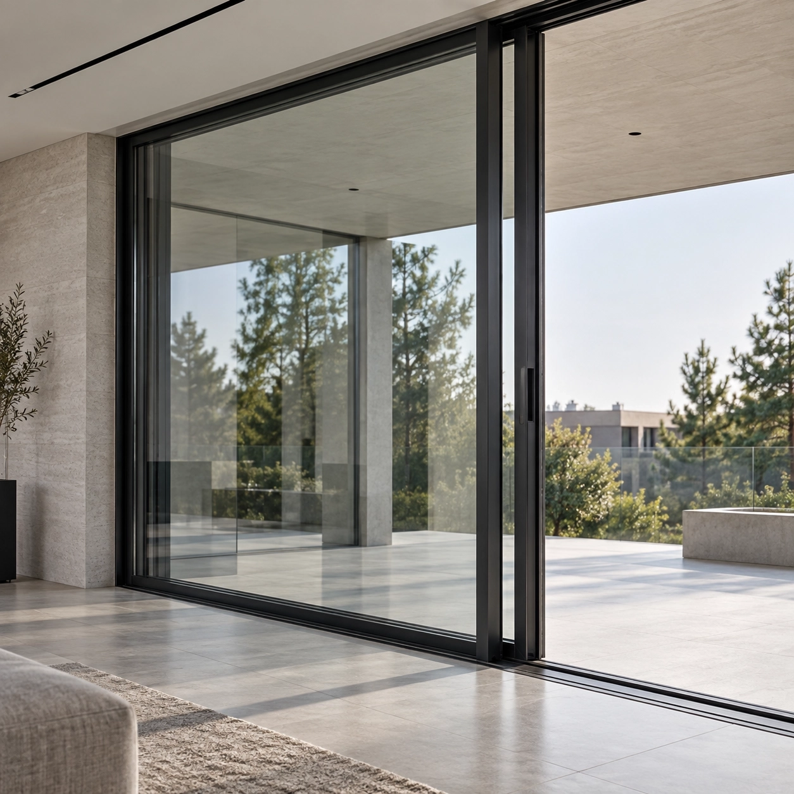
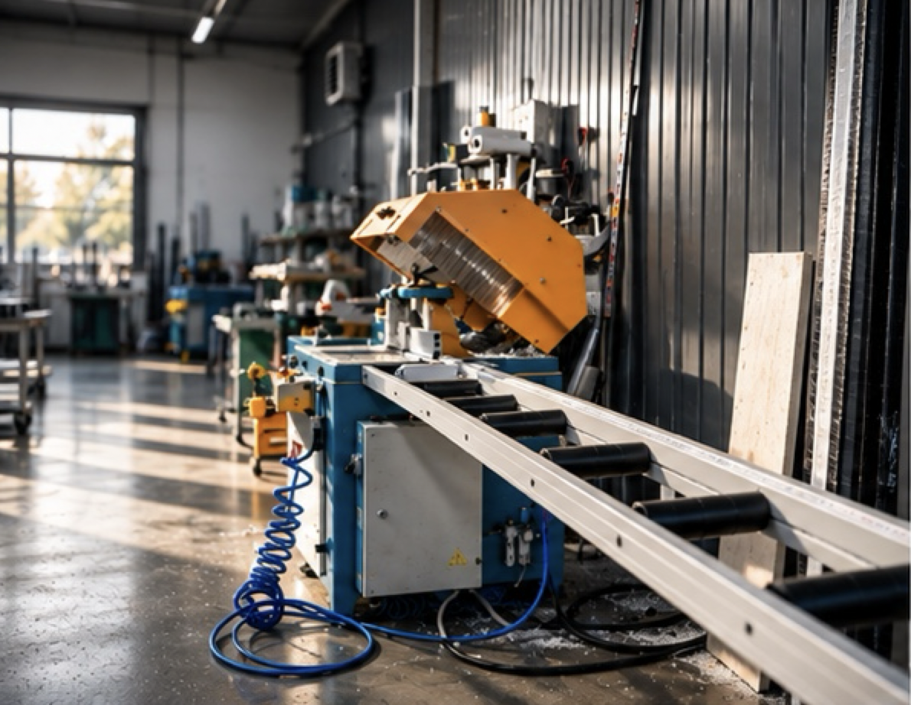

Без зоны распахиванияСтворка движется параллельно фасаду — пространство комнаты остаётся свободным.

HS · подъёмно-раздвижные порталыМосква / МО
Большой проём.
Лёгкое открывание.
Алюминиевый портал для выхода на террасу, в сад или на веранду. Большие стеклянные створки сдвигаются вдоль фасада и не занимают пространство комнаты.
Готовые размеры3,0 · 3,6 · 4,8 м
Створкадо 400 кг*
Исполнениепо задаче объекта
01 · Архитектура
Не окно.
Подвижная часть фасада.
HS нужен там, где обычная дверь уже начинает мешать архитектуре: широкий проём, большое стекло, постоянный выход на участок и минимум визуального дробления.
Большой форматМеханика рассчитана на крупные и тяжёлые панорамные створки.
Плавный ходВес полотна принимает роликовая система, поэтому движение остаётся контролируемым.
Собираем под объектРазмер, стекло, порог, цвет и направление открывания подбираются под дом.
02 · Линейка
Готовые конфигурации
Три базовых размера для быстрого старта. Конфигурацию можно адаптировать по цвету, стеклу и направлению открывания; нестандартный проём проектируем индивидуально.
 01
01
Классический выход
1 подвижная + 1 фиксированная секция. Для гостиной, кухни-столовой или выхода на террасу.
от 375 000 ₽Смотреть ↗
 02
02
Широкий панорамный проём
2 подвижные + 1 фиксированная секция. Для фасада, где нужен больший проход и больше стекла.
от 489 000 ₽Смотреть ↗
 03
03
Центральное открывание
4 секции с симметричным проходом по центру. Для большого фасада и главного выхода на террасу.
от 620 000 ₽Смотреть ↗
Под архитектуру дома
Своя ширина, высота, деление, направление движения, стеклопакет и узлы примыкания.
по расчётуРассчитать →
03 · Схемы
Сколько проёма откроется
Выберите нашу готовую конфигурацию и сразу посмотрите направление движения, ориентировочную долю открытия и как эта схема выглядит в фасаде.
HS / 30 · активная слева
3000 × 2300 мм
Как будет смотреться
Классический двухсекционный выход на террасу
Другой размер? Спроектировать HS / PROJECT →
Открытая часть и ширина прохода показаны как ориентир по геометрии схемы. Фактический чистый проход зависит от ширины профиля, перехлёстов створок и конкретной комплектации — его фиксируем в инженерном расчёте.
04 · Механика + герметичность
Сначала скользит.
Потом прижимается.
В этом и есть смысл HS-механики: при открывании створка поднимается на каретки и легко движется, а при закрывании опускается обратно к контуру уплотнений.
потяните створку →
Закрыто
Поворот ручки
Механизм разгружает створку от закрытого прижима.
Подъём на каретки
Вес стеклянного полотна принимает роликовая система.
Параллельный сдвиг
Створка движется вдоль соседней секции без зоны распахивания.
Опускание + прижим
При закрывании створка возвращается к уплотнениям по контуру.
условная схема нижнего узлане монтажный чертёж
Контур уплотнений
Уплотнения работают по периметру закрытой конструкции и участвуют в защите от продувания.
Пороговый узел
Согласовываем его с чистовым полом, гидроизоляцией и наружным водоотводом.
Точная геометрия
Для тяжёлой створки особенно важны ровное основание, сборка и регулировка механизма.
Финальная регулировка
После монтажа проверяем ход, закрывание, прижим и примыкания по всему контуру.
Воздухопроницаемость базыкласс 4*
Что влияет на итогпрофиль · стекло · узел · монтаж
Проверяем на объектегеометрию · пол · водоотвод
* Характеристика относится к профильной базе готовых конфигураций. Итоговые свойства конкретного портала зависят от размера, заполнения, схемы и монтажного узла.

05 · Под проект
Дом не должен подстраиваться под каталог.
Для нестандартного проёма собираем конструкцию как инженерный комплект: проверяем геометрию, вес стекла, чистовой пол, направление открывания и монтажные узлы.
Размер
Схема
RAL
Стекло
Порог
Монтажный узел
06 · Стеклопакет
Формула под задачу, а не «один тип стекла»
Безопасность, акустика, солнцезащита и энергосбережение могут сочетаться в одном стеклопакете. Для крупных створок обязательно считаем его массу.
01 · безопасность
Закалённое / триплекс
Для дверных зон, крупных полотен и мест активного прохода.
02 · акустика
Тише внутри
Асимметричная формула и акустический триплекс помогают снизить уличный шум.
03 · климат
Солнце и тепло
Покрытия подбираются по ориентации фасада и режиму использования помещения.
Диапазон заполнения профильной базы готовых конфигураций — 10–50 мм. Конкретную формулу стеклопакета подтверждаем расчётом.
07 · Сценарии
Где HS особенно уместен
Не ограничиваем систему «террасой». HS работает везде, где нужен большой открываемый стеклянный проём и чистая архитектура.
01Террасаежедневный выход из жилой зоны
02Гостинаястеклянная стена с открываемой частью
03Загородный домвыход в сад или внутренний двор
04Веранда / павильонсезонное или круглогодичное пространство
08 · Проекты
Система внутри архитектуры
Показываем не «окно крупным планом», а то, как раздвижной портал работает вместе с фасадом, интерьером и участком.

Проект 01 · Загородный дом
Панорамный фасад
Раздвижная часть объединена с глухим остеклением в одну архитектурную линию.
Проект 02Выход на террасу
Проект 03Свет во всю высоту
09 · Технические ориентиры
Что проверяем до производства
Предельные значения — не готовый размер заказа. Сначала считаем вес заполнения, геометрию створки и схему движения.
МатериалАлюминий
МеханикаLift&Slide
Вес створкидо 400 кг*
Ширина створкидо 3000 мм*
Высота створкидо 3100 мм*
Заполнение10–50 мм*
Готовые схемы2 / 3 / 4 секции
Нестандартпо проекту
* Предельные значения относятся к техническому диапазону используемых комплектующих и профильной базы. Допустимость конкретной конструкции подтверждается инженерным расчётом.
10 · FAQ
Перед проектом
Коротко о вопросах, которые чаще всего возникают до замера.
Чем HS отличается от обычной раздвижной двери?+
В HS при повороте ручки створка приподнимается на каретки и затем сдвигается. Такая механика рассчитана на крупные тяжёлые полотна и обеспечивает прижим в закрытом положении.
Можно ли изменить сторону открывания?+
Да. Для двухсекционной конфигурации доступны варианты с активной створкой слева или справа. Для других схем направление и количество активных секций определяются конфигурацией.
Можно ли сделать нестандартный размер?+
Да. Если готовые 3,0 / 3,6 / 4,8 м не подходят, проектируем конструкцию под конкретный проём и проверяем геометрию, стекло и монтажный узел.
Что влияет на герметичность?+
Профиль и уплотнения, правильная работа механизма прижима, пороговый узел, монтаж, регулировка и состояние примыканий.
Как выбирается стеклопакет?+
По назначению помещения, ориентации фасада, требованиям к безопасности, шуму и солнечной нагрузке. Для больших створок отдельно проверяем массу заполнения.
11 · Ваш проект
Начнём с проёма.
Пришлите размер, фото или план дома. Предложим схему HS, проверим ключевые ограничения и подготовим предварительную комплектацию.
01 · предложим схему
02 · проверим стекло и вес
03 · подготовим расчёт